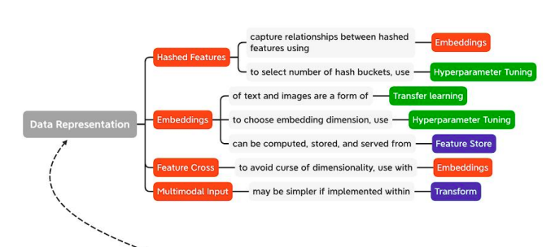
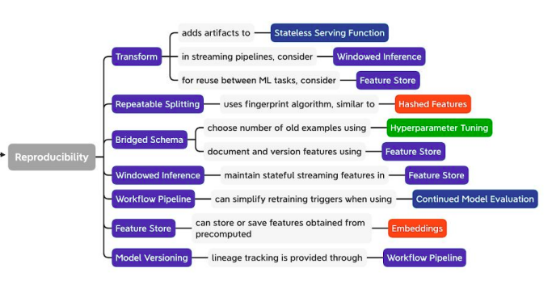
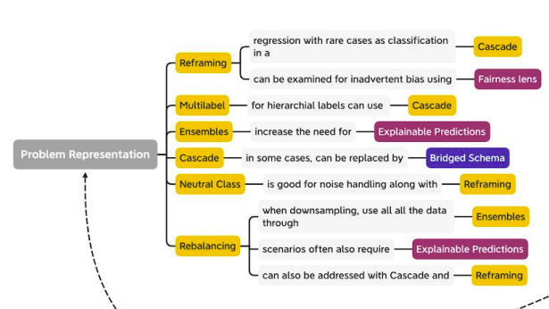
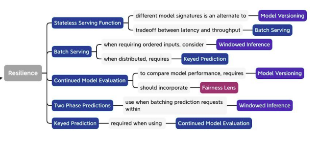
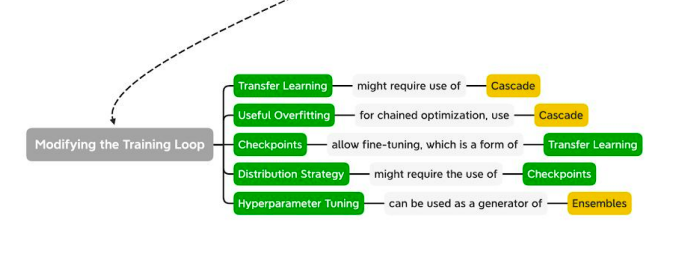
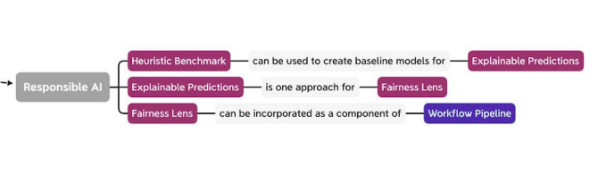
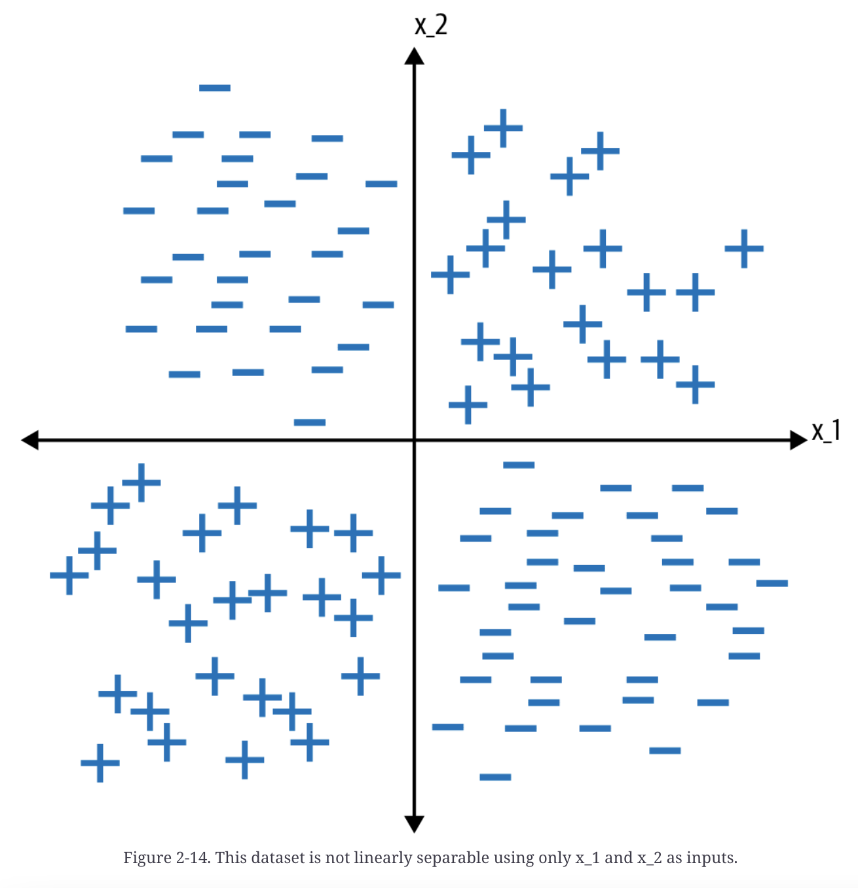

Machine Learning Design Patterns
Contents
Machine Learning Design Patterns¶
The Need for ML Design Patterns¶
. |
. |
|---|---|
 |
 |
 |
 |
 |
 |
\(\tiny{\text{20200917 - Sara Robinson - Responsible-AI-patterns}}\)
Data representation design patterns¶
data representation
baby weight represented as boolean in the model
feature engineering
process of creating features
learnable data representation
feature extraction
feature cross design pattern
a decision tree where each node can represent only one input variable reduces to a stepwise linear function,
an oblique decision tree where each node can represent a linear combination of input variables reduces to a piecewise linear function
Simple data representations
Numerical inputs
scaling say [-1,1]
optimizer works better
gradient descent
requires more steps to converge as curvature of loss function increases
derivative of features with large magnitude will be larger and will have abnormal weight
centering data within a range makes error function more spherical, will converge faster
lack of scaling
affects efficacy of L1/L2 regularization
Linear scaling
Min-max scaling
Clipping
helps in solving outliers
Z-score normalization
Winsorizing
use empirical distribution to clip dataset
10 and 90 percentile
Min-max and clipping
best for uniformly distributed data
Z-score
best for normally distributed data
dont throw away outliers
Non-linear transformations
distribution of number of views of Wikipedia pages is highly skewed
transform using the logarithm, power function and linear scaling in succession
histogram equalization
bins of histogram are chosen based on quantiles of raw distribution
Box-Cox transformation
Categorical inputs
One-hot encoding
#1 Hashed Feature¶
Problem Statement:
incomplete vocabulary
cardinality of model
cold start
Solution
one-hot encoding categorical variable
Problem: pose problems for doctor_id of person delivering baby
Potential Sol:
training data might not contain complete information of all hospitals/physicians
vocabulary is incomplete
categorical variables can have high cardinality
sparse dataset
cold start problem
new hired doctor
Problem: Predict arrival delay of flight - 347 airport in US
Process:
feature will be quite sparse
Potential Sol:
Hashed Feature design patternconvert categorial input to unique string
deterministic hashing algorithm (for training and testing)
remainder of hash result as buckets
returns absolute value of modulo of hashed number, which can be negative
farm_fingerprintin BigQueryfeature_columnin TensorFlow
choice of bucket size
10 buckets will have average of 35 airports
implying characteristics of airports will be shared
high cardinality
using small number of buckets makes the model practical
this is lossy encoding - acceptable compromise
cold start
solves the problem
Trade Offs/Alternatives
bucket collision
compromising on the ability of accurately representing data
dont use if vocabulary is small and cold start is not a problem
Skew
Chicago airport is busiest, so all airports in the same bucket will be highly skewed
Aggregate feature
for every airport,
find probability of on-time flights
add it as a feature of model
this avoids losing information of airports while hashing
Hyperparameter tuning
choose number of buckets as hyperparameter
Crypotographic hash
by not using modulo in hashed feature
this becomes a binary encoding problem
binary encoding does not solve out-of-vocabulary or cold start problem
airports starting with letter O have nothing in common
by not using modulo, encoding will have a spurious correlation between airports that start with same letter
so binary encoding of farm fingerprint is not recommended
binary encoding of MD5 hash will not have spurious correlation
as the output of MD5 hash is uniformly distributed
but this is not deterministic and not unique
fingerprint hashing algorithm is needed and not a cryptographic hashing algorithm
so as to produce deterministic and unique value
cryptographic hash is not usable in a feature engineering context
MD5 is non-deterministic because of “salt”
salt is the string that is added to each password
this ensures that two users using the same password, will have different hashed value
Order of operation is also important
abs, mod, farm_fingerprint
empty hash buckets
possible
use L2 regularization
weights associated with empty bucket will be driven to near-zero
this ensures, out-of-vocabulary fall into empty bucket
#2 Embedding¶
Problem Statement:
convert high cardinality data into low dimensional
preserve the relevant information
Counterfactuals:
categorical data represented as one-hot encoding
does not represent plurality in dataset
one-hot encoding represents features are independent
closeness relationship is often required
Solution:
embeddings capture closeness relationships in the input data
use embedding layer/weights as replacement for
clustering technique (customer segmentation)
dimensionality reduction method (PCA)
weights can be learned using gradient descent procedure
Text Embeddings
cardinality of vocabulary
large sparse matrix
Tokenization
lookup table that maps each word to an index
Image Embeddings
text deals with sparse input
image/audio deals with dense, high dimensional vectors
in CNNs, if the last softmax layer is removed
can be used to extract feature vector for an input
Learned Embeddings
extracts inherent similarities between categories
pretrained embeddings are referred as transfer learning
Trade-Offs/Alternatives:
Choosing the embedding dimension
Autoencoders
Encoder
maps high-dimensional input into low-dimensional embedding layer
auxillary learning task
Decoder
maps representation back into high-dimensional embedding layer
Context language models
examples
Context language models
Word2Vec
Continuous Bag of Words (CBOW)
skip-gram model
Bidirectional Encoding Representations from Transformers
BERT
masked language model
words are randomly masked from text
model guesses what the missing words are
next sentence prediction
classification task
whether or not two sentences follow each other
pre-trained text embedding
like Word2Vec, NNLM, GLoVE, BERT
can be added to ML model
along with structured inputs
Embeddings in a data warehouse
TensorFlow Hub: has pretrained models like Swivel
Potential Project Work/Notes:
build a deep neural network (DNN) model in Keras that implements a simple embedding layer to transform the word integers into dense vectors
CNN/NLP - image-to-text captioning
encoder produces low-dimensional embedding representation of image
encoder is Image2Vec embedding machine
Read: TabNet
TensorFlow Hub: has pretrained models like Swivel
#3 Feature Cross¶
helps model learn relationships between input faster by explicitly making each combination of input values a separate feature
suppose we need to create a binary classifier that separates the label into + and - classes

its a commonly used feature engineering technique
a feature cross is a synthetic feature formed by concatenating two or more categorical features in order to capture interaction between them
by joining two features, nonlinearity can be encoded into the model
the predictive abilities of features is extended
complex models like neural network and trees can learn feature crosses on their own
explicit features are better than linear models
speeds up model training and reduces model complexity
Trade-Offs and Alternatives
Handling numerical features
feature cross cannot be used with continuous input
for m and n possible values, feature cross will be m*n elements
if data is continous, bucketize the data to make it categorical before applying feature cross
for example - latitude and longitude
Handling high cardinality
feature cross leads to sparsity
can be useful to pass a feature cross through an Embedding layer
this will create a lower-dimensional representation
it will also allow to capture the closeness relationship
Need for regularization
as feature cross introduce multiplicative cardinality, the number of category increases
if individual features have too few items, model will not be able to generalize
so feature cross can either
be paired with L1 regularization, which encourages sparsity of features
or with L2 regularization, which limits overfitting
thus model will be able to ignore extraneous noise by synthetic features and combat overfitting
#4 Multimodal Input¶
Basic Idea
represent different data types or data that can be expressed in complex ways by concatenating all the available data representations
for example be able to combine image and text inputs in a model
Trade-Offs and Alternatives
Tabular data multiple ways
group them in buckets
Multimodal representation of text
Text data multiple ways
represent text as embeddings
in BOW approach
the order of text is not preserved
but it detects presence/absence of certain words
which approach to choose of BOW and embedding
Embeddings
provide extra information about word meaning
not available in BOW
but embeddings require training
identifies relationships between words
encodes the frequency of words in text
BOW
use BOW with linear regression or decision tree
providees strong signals for most significant words in the vocabulary
treats presence of each word as boolean value
Extracting tabular features from text
punctuation (question mark) influences the likelihood of answer
Multimodal representation of images
Images as pixel values
Images as tiled structures
Combining different image representations
Using images with metadata
Multimodal feature representations and model interpretability
Problem representation design patterns¶
#5 Reframing¶
Basic Idea
refers to changing the representation of the output of a machine learning problem
Problem
classify the problem
type of learning problem
type of features
type of labels
range of acceptable errors
is it a time series forecasting problem
is it a probabilistic problem
is it a regression problem or a classification one
how to improve the predictions
do we need to add layers into our network
do we need to engineer more features
do we need more data
do we need another loss function
Solution
Why it works
make it a multiclass classification problem
rainfall is probabilistic
instead of trying to predict as a single number(using regression), we can predict a range(using classification)
this allows capturing probability distribution instead of capturing mean as in regression
rainfall doesnot exhibit bell-shaped curve distribution model
rainfall follows Tweedie distribution
this allows prevalance of zeros
Google research paper - MetNet
objective is better supported
recommendation system for videos
instead of framing it as a classification problem, as how likely will user watch a video
reframing it to regression problem, will help predict the fraction of video that will be watched
learn the prediction as a range instead of a single number
loss of precision due to bucketing
but gains expressiveness in the form of full probability distribution function
better understanding of posterior probability distribution of predicted values
Capturing uncertainty
task of predicting baby weight
seems like a regression problem
distribution of baby weights follows a normal distribution peaked at 7.5 pounds
but
width of distribution
nontrivial likelihood is inherent in the prediction
best RMSE we can have is SD of the distribution
how far predictions fall from measured true values using Euclidean distance
if this problem is framed as regression problem
prediction would be predicted as 7.5+/-1.0
width of distribution will differ by inputs
this will take the shape of quantile regression
which can be solved in nonparametric way
by reframing the problem as multiclass classification
more flexible in capturing uncertainty
model predicts collection of probabilities for different combinations
Changing the objective
sometime reframing classification problem into regression can help
e.g., build ML model for recommendations for a movie database with customer ratings
instead of having categorical output, use multitask learning
model learns about the user characteristics such as income, customer segment, etc
users who are likely to watch movie
reframing as regression task
model predicts user-space representation for a given movie
choose set of movies that are closest to known characteristics of user
instead of providing probability that a user will like a movie as in classification
it will predict cluster of movies that have been watched by users like this
it can similarly be used to predict trending videos, classic movies
numerical representation has intuitive interpretation
real estate pricing surge
instead of urban area predictions
use of latitude and longitude pair is easier
Trade-Offs and Alternatives
Bucketized outputs
typical approach to reframe regression task to classification is to bucket the output values
this becomes a multiclass classification
comparing RMSE of regression model and accuracy of classification model is difficult
Other ways of capturing uncertainty
Quantile regression
Tensorflow probability to carry out regression
more complex relationships require more training data
thumb rule
for classification tasks,
have 10 times the number of model features for each label category
Precision of predictions
for multiclass classification
width of bins govern precision of classification model
sharpness of PDF tells about precision of task as regression
sharper PDF implies smaller SD
wider PDF implies larger SD
very sharp density function(the peak), go with regression model
Restricting the prediction range
why? so as to restrict range of prediction output
suppose output range is [5-17]
if output layer is using linear activation function, model prediction may fall out of this range
how?
make activation function of the last-but-one layer a sigmoid function
so range is [0,1]
then scale using the last layer
Label bias
Matrix factorization in recommendation system
can be reframed in NN, both as regression and classification
can incorporate many additional features
consider nature of target label when reframing
suppose we reframed recommendation model to classification problem
predict likelihood a user will click on video thumbnail
here change of label is not in line with prediction task
better choice will be, video watch time, as regression problem
how long will user watch the video
Multitask learning
instead of choosing between regression and classification
do both
in Multitask learning, more than loss functions are optimized
how to achieve this?
parameter sharing
parameters of neural network are shared between different output tasks such as regression and classification
Hard parameter sharing
when the hidden layer of model are shared between all the output tasks
Soft parameter sharing
each label has its own neural network with its own parameters
through parameter sharing, tasks are learned simultaneously
gradient updates from two loss functions inform both output and result in a generalized manner
10am EST Monday make pay before 8am Monday
#6 Multilabel¶
Basic Idea
refers to problems where we can assign more than one label to a given training example
thats different from multiclass classification problem
an example of multilabel - a movie can belong to multiple genres - can be both comedy and for children
an example of multiclass - a movie can either be rated as U/A or A or U - it cannot be categorized as more than one class
Problem
generally prediction is of N possible classes where N is greater than 1
softmax function as activation function is generally used for the output layer
if model is classifying images as cats, dogs or bunnies, the softmax output will predict one of these
but each image can have more than one possible label
Solution
SIGMOID VERSUS SOFTMAX ACTIVATION
softmax activation function
sums to 1
each value is between 0 and 1
for example:
chances of cats, dogs and bunnies [0.75, 0.10, 0.25]
use this function in multiclass classification problem
sigmoid activation function
does not sum to 1
each value is between 0 and 1
chances of image having a cat, dog and bunnies [0.85. 0.55, 0.45]
use this function in multilabel classification problem
Trade-Offs and Alternatives
Sigmoid output for models with two classes
binary classification is a special type of multiclass classification problem
each training example can be assigned only one class
both sigmoid and softmax can be used as activation function
Which loss function should we use?
for binary classification
binary cross entropy loss function should be used
Parsing sigmoid results
for softmax output
argmax of array gives the predicted class
for sigmoid output
evaluate probability of each class in output layer
use the probability threshold
determine the confidence threshold
consider the top K
Dataset considerations
generally it is ensured that the dataset is balanced, equal number of training examples for each class
but for Multilabel design pattern, thats difficult
for hierarchial labels
use flat approach
put every output label in the same output array, irrespective of its hierarchy
this approach might loses information
use cascade design pattern
identify higher labels first
then based on high level classification, choose lower labels
Inputs with overlapping labels
[10001000]
first and fifth label correspond to two description for an item
One versus rest
train multiple binary classifiers instead of one multilabel model
choose a confidence threshold
tag input question with tags for each binary classifier above threshold
adv
can be used with SVMs which can only do binary classification
helps in rare category classification, as it classifies one task at a time, apply rebalancing design pattern then
#7 Ensembles¶
Basic Idea
refers to techniques in machine learning that combine multiple machine learning models and aggregate their results to make prediction
Problem
irreducible error
error inherent in the model, resulting from
the noise in the dataset
framing of the problem
bad training examples/measurement errors/confounding factors
reducible error
error due to bias
bias leads to inability to learn relationship about model’s features and labels
high bias will lead to underfit
error due to variance
variance leads to inability to generalize on new unseen examples
high variance will lead to overfit
goal is to have low bias and low variance model
increasing model complexity
decreases bias but increases variance
decreasing model complexity
decreases variance but increases bias
Solution
Bagging
short for bootstrap aggregating
addresses high variance in ML models
example of bagging ensemble method
random forest
multiple decision trees are trained on randomly sampled subsets of the entire training data
model averaging in bagging
method of reducing model variance
Boosting
works by iteratively improving model to reduce prediction error
model is punished more and more as per the residuals at each iteration step
each new weak learner corrects for the mistakes of the previous prediction by modeling the residuals delta_i of each step
after multiple iterations, residuals tend toward zero
AdaBoost, Gradient Boosting Machines, and XGBoost
good for high bias sets
Stacking
combines outputs of collection of models to make prediction
Trade-Offs and Alternatives
Increased training and design time
Dropout as bagging
Decreased model interpretability
explanation predictions can get difficult
for example random forest
Choosing the right tool for the problem
Other ensemble methods
incorporate Bayesian approach with neural architecture search and reinforcement learning, like Google’s AdaNet/AutoML
#8 Cascade¶
Basic Idea
addresses situation where a ML problem can be broken down into series of ML problem
the output of one model is an input to the following model
Problem
Solution
typically a ML problem can be solved by breaking it into 4 cascade problems
a classification model to identify the circumstance
one model trained on unusual circumstances
separate model trained on typical circumstances
model to combine the output of the two separate models, because the output is a probabilistic combination of the two outputs
this pattern adds quite a bit of complexity in the workflow
Trade-Offs and Alternatives
Deterministic inputs
Single model
should not be used where a single model is eenough
Internal consistency
Pre-trained models
Reframing instead of Cascade
Regression in rare situations
#9 Neutral Class¶
Basic Idea
train a binary classifier that outputs probability of an event, train a three-class classifier that outputs disjoint probabilities for Yes, No, and Maybe
Maybe is a disjoint class and they don’t overlap
Problem
Solution
Synthetic data
In real world
Trade-Offs and Alternatives
When human experts disagree
Customer satisfaction
As a way to improve embeddings
Reframing with neutral class
#10 Rebalancing¶
Basic Idea
approaches for handling datasets that are inherently imbalanced
Problem
accuracy can be misleading on imbalanced datasest
Solution
Choosing an evaluation metric
use metrics like precision, recall, or F-measure
F-measure ranges from 0 to 1, uses both precision and recall
test class should have the same class balance as original dataset
ROC curve (AUC)
Downsampling
changes the balance of our underlying dataset
Weighted classes
changes how model handles certain classes
Upsampling
duplicates examples from minority class, and
apply augmentations to generate additional samples
Trade-Offs and Alternatives
Reframing and Cascade
Anomaly detection
Number of minority class examples available
Combining different techniques
Choosing a model architecture
Importance of explainability
Model training patterns¶
iterative process
Typical Training Loop¶
Stochastic Gradient Descent(SGD)
error/loss needs to be monitored
not a closed form solution
extensions(de facto optimizer in modern day frameworks)
Adam
Adagrad
Keras Training Loop
#11 Useful Overfitting¶
Basic Idea
omit use of validation or testing dataset so as to intentionally overfit on the training dataset
Problem
Solution
Trade-Offs and Alternatives
Interpolation and chaos theory
Monte Carlo methods
Data-driven discretizations
Unbounded domains
Distilling knowledge of neural network
Overfitting a batch
#12 Checkpoints¶
Basic Idea
store the full state of the model periodically, which can be accessed in partially trained models
along with also use virtual epochs, wherein the inner loop of the fit() function is used, not on the full training dataset but on a fixed number of training examples
Problem
Solution
Trade-Offs and Alternatives
#13 Transfer Learning¶
Basic Idea
use previously trained model,
freeze the weights, and
incorporate nontrainable layers into a new model that solves the same problem, but on a smaller dataset
Problem
Solution
Trade-Offs and Alternatives
#14 Distribution Strategy¶
Basic Idea
training loop is carried out at scale over multiple workers,
often with caching, hardware acceleration, and parallelization
Problem
Solution
Trade-Offs and Alternatives
#15 Hyperparameter Tuning¶
Basic Idea
training loop is inserted into an optimization method to find the optimal set of model hyperparameters
Problem
Solution
Trade-Offs and Alternatives
Resilience patterns¶
#16 Stateless Serving Function¶
Basic Idea
Problem
Solution
Trade-Offs and Alternatives
#17 Batch Serving¶
Basic Idea
Problem
Solution
Trade-Offs and Alternatives
#18 Continuous Model Evaluation¶
Basic Idea
Problem
Solution
Trade-Offs and Alternatives
#19 Two Phase Predictions¶
Basic Idea
Problem
Solution
Trade-Offs and Alternatives
#20 Keyed Predictions¶
Basic Idea
Problem
Solution
Trade-Offs and Alternatives
Reproducibility patterns¶
#21 Transform¶
Basic Idea
Problem
Solution
Trade-Offs and Alternatives
#22 Repeatable Sampling¶
Basic Idea
Problem
Solution
Trade-Offs and Alternatives
#23 Bridged Schema¶
Basic Idea
Problem
Solution
Trade-Offs and Alternatives
#24 Windowed Inference¶
Basic Idea
Problem
Solution
Trade-Offs and Alternatives
#25 Workflow Pipeline¶
Basic Idea
Problem
Solution
Trade-Offs and Alternatives
#26 Feature Store¶
Basic Idea
Problem
Solution
Trade-Offs and Alternatives
#27 Model Versioning¶
Basic Idea
Problem
Solution
Trade-Offs and Alternatives
Responsible AI¶
#28 Heuristic benchmark¶
Basic Idea
Problem
Solution
Trade-Offs and Alternatives
#29 Explainable Predictions¶
Basic Idea
Problem
Solution
Trade-Offs and Alternatives
#30 Fairness Lens¶
Basic Idea
Problem
Solution
Trade-Offs and Alternatives
Summary¶
Reference¶
Machine Learning Design Patterns - by Valliappa Lakshmanan, Sara Robinson, and Michael Munn